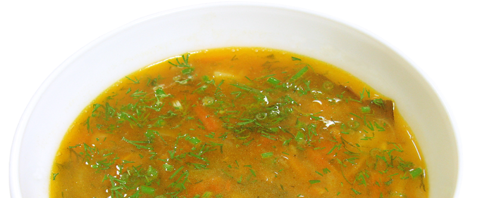

приготовление:
-
Положить в кастрюлю 500 г говядины, залить 2,5 л холодной воды и поставить на огонь. Крышкой не накрывать. После закипания снять пену, убавить огонь и варить 2–2,5 часа, пока мясо не станет мягким.
-
Достать готовую говядину, нарезать порционными кусочками и вернуть в бульон.
-
Нашинковать 500 г белокочанной капусты и добавить в кипящий бульон. После повторного закипания очистить 3 картофелины, нарезать кубиками, добавить в кастрюлю и варить 10 минут.
-
Очистить и мелко нарезать 1 морковь и 1 луковицу. Нарезать 2 помидора. Обжарить овощи на сковороде с небольшим количеством растительного масла до мягкости.
-
Добавить зажарку в щи и варить ещё 10–15 минут, пока картофель и капуста не станут мягкими.
-
За 5 минут до окончания приготовления добавить лавровый лист, соль и чёрный перец по вкусу. Растереть 1 зубчик чеснока с небольшим количеством соли и добавить в суп.
-
Снять щи с огня и дать настояться 10–15 минут.
-
Разлить по подогретым тарелкам, добавить сметану и посыпать зеленью.